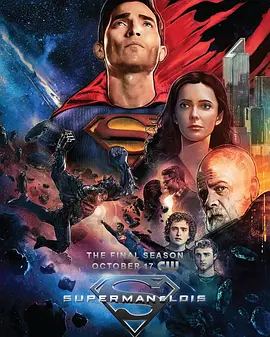

8.7
超人和露易丝 第四季
Superman & Lois Season 4
2024
美国
评分 8.7
导演:
格里高利·史密斯
演员:
泰勒·霍奇林 / 比茜·图诺克 / 亚历山大·加芬 / 迈克尔·毕晓普 / 迪伦·沃尔什
类型:
冒险,动作,科幻
剧情简介
在第四季开启时，克拉克·肯特以“超人”的身份似乎达到了巅峰，但一个意外的破坏让他的内心和身体骤然失衡。斯莫维尔的天空再次被阴云覆盖——一位多年隐忍的仇敌带着全新的计划重返，小镇曾经平静的生活随之撕裂。露易丝·莱恩意识到自己不仅是记者、妻子、母亲，她还成为了某个复仇链条的关键环节。她在追查那些与露易丝早年报道相关的过去时，渐渐发现许多不可见的伤口仍在流血，而克拉克却在一次冲突中被迫亲眼见证了自己的力量与脆弱。两位儿子在这场风暴中也不得安宁。乔丹和乔纳森在成长的道路上对父亲背后的身份有了更实际的认知，而他们的选择、恐惧与悔恨正在交织成新的挑战。家庭的内墙开始出现裂缝，每一个动作镜头后都是沉默的凝视、每一次危机转折都伴随一句未说出口的“我承受不了再失去你”的潜台词。与此同时，斯莫维尔的地表再次被力量撕裂，曾被视为“怪物”的毁灭日（Doomsday）重现阴影，无声无息地逼近，仿佛昭示着旧时代的终结和新时代的撕裂。当“超人”被迫放下披风，回到肯特农场的泥土之间，露易丝与他一起重新审视“英雄”二字的意义。他们是否还能守住最初的信念？儿子们是否愿意迎接家族的命运？镇子是否仍能如过去那般成为避风港？在这场宏大的终章中，每一次挥拳、每一次看似平静的田野会话，背后都隐藏着命运的暗涌。